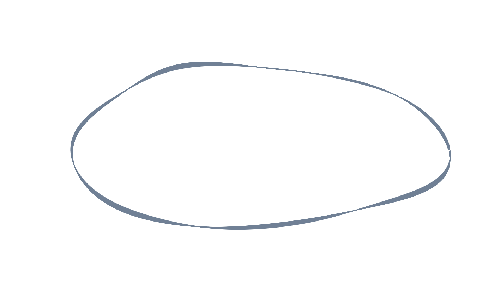
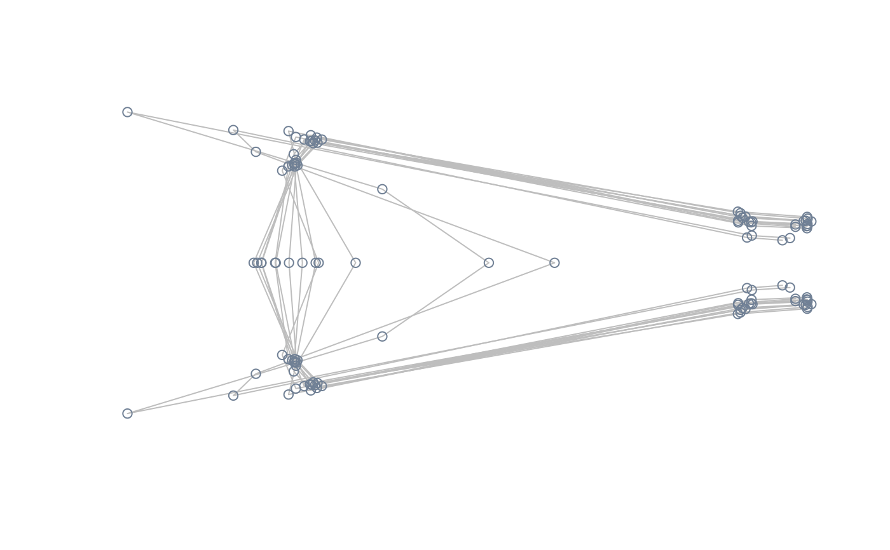
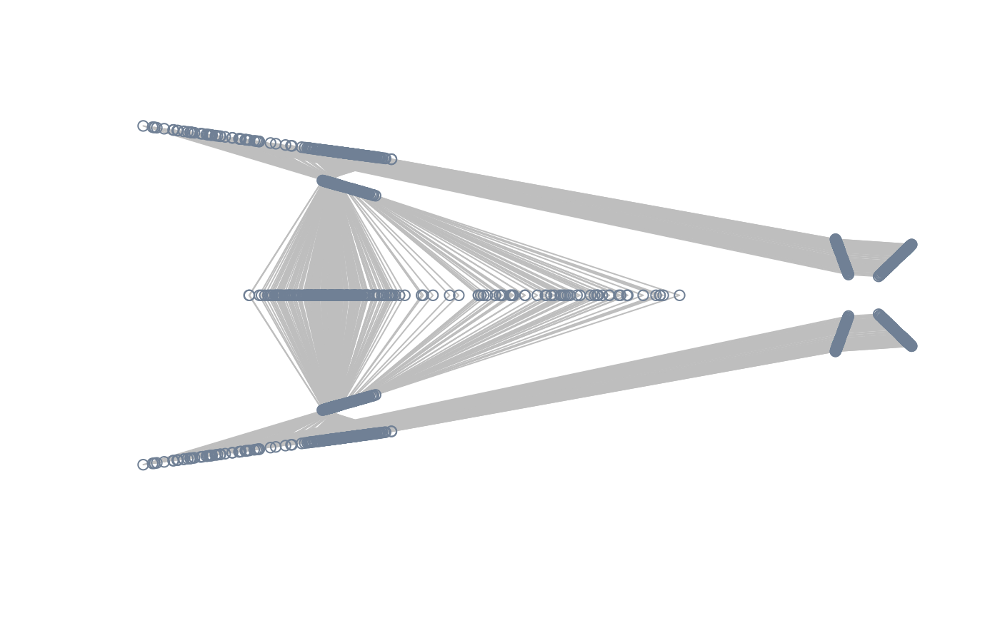
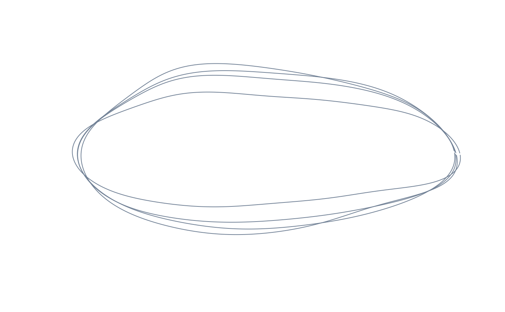
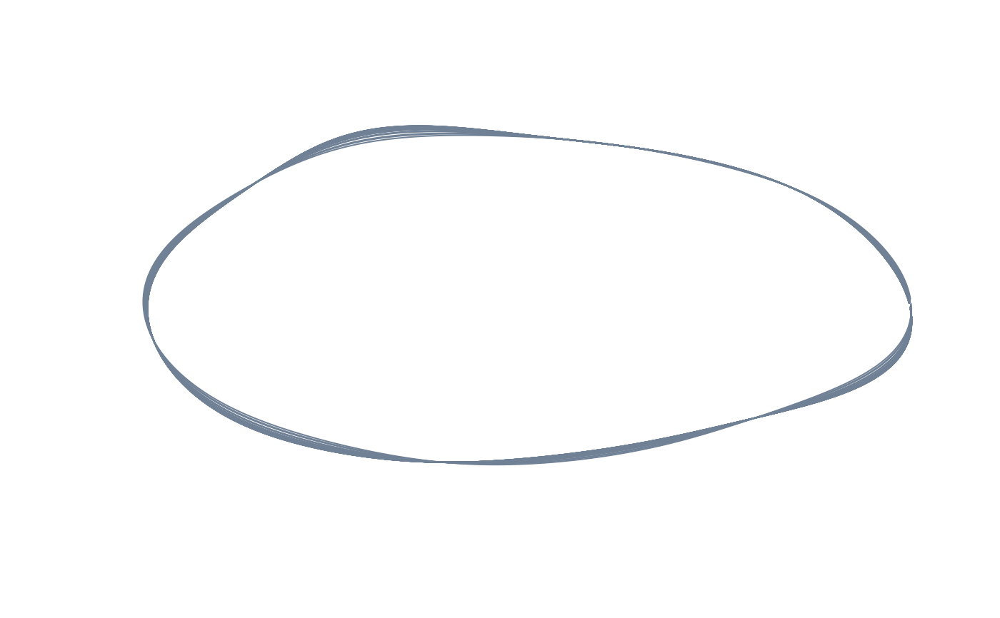
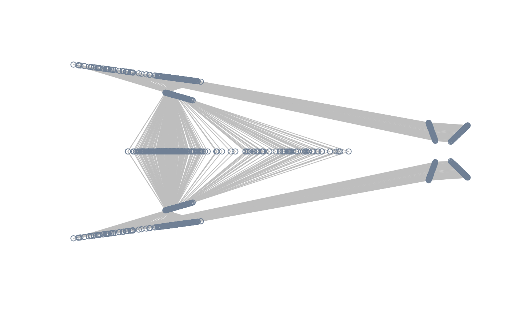
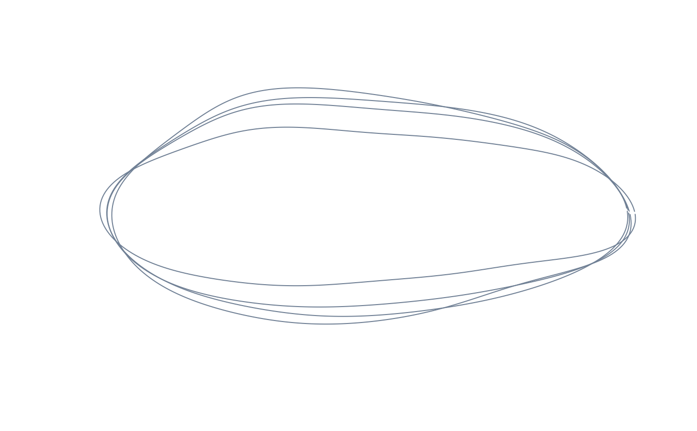
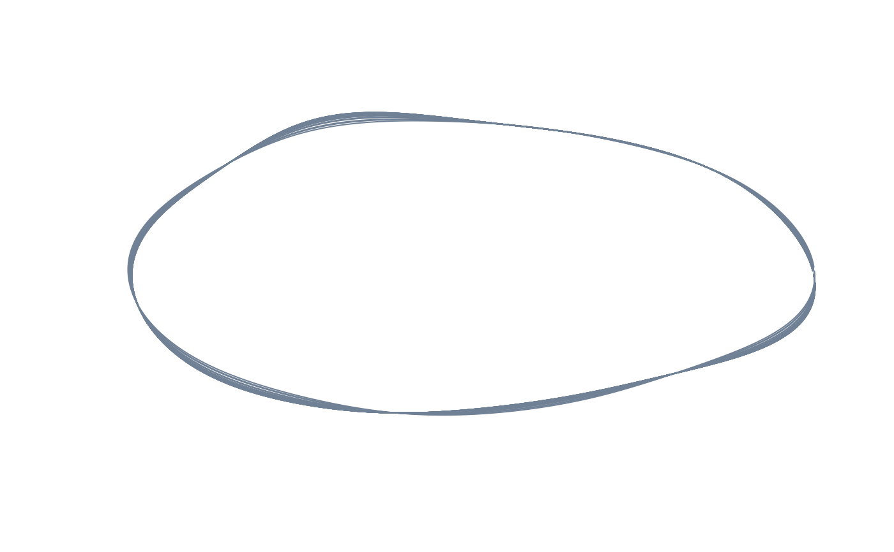

Compute the mean shape from the entire sample, or the shape(s) expected for one or more levels (factors) or values (numerics) of an external explanatory variable as fitted by a linear model.
expected_shapes(
shapes,
x = NULL,
xvalue = NULL,
tree = NULL,
returnarray = TRUE
)Arguments
- shapes
Shape data.
- x
A vector or column vector containing a single explanatory variable (can be either a factor or a numeric). If
NULL, the grand mean of the entire sample is computed.- xvalue
One or more numeric value(s) or factor level(s) of
xat which calculate expected shape(s). IfNULL, all the value(s) or level(s) are used.- tree
A
"phylo"object containing a phylogenetic tree. Tip labels should match names inxandshapes.- returnarray
Logical, indicating whether shapes should be returned in "3D" array format (landmark shapes only). Mostly intended for internal use.
Value
For landmark data, either a p x k matrix defining a single
mean shape or a p x k x n array containing n mean shapes,
unless returnarray = TRUE (in which case a n x (p x k) matrix
will be returned. For Fourier data, a n x (4 x nb.h) matrix of
Fourier coefficients (with nb.h being the number of harmonics used
during elliptic Fourier analysis).
Details
If a phylogenetic tree is supplied for interspecific shape data, the procedure is performed using the phylogenetically-corrected regression coefficients (see Revell, 2009) assuming a Brownian Motion model of evolution.
References
Revell, L. J. (2009). Size-correction and principal components for interspecific comparative studies. Evolution, 63, 3258-3268.
Examples
#load tails data and packages
library(Morpho)
library(Momocs)
#>
#> Attaching package: ‘Momocs’
#> The following object is masked _by_ ‘.GlobalEnv’:
#>
#> wings
#> The following objects are masked from ‘package:Morpho’:
#>
#> export, tps2d
#> The following object is masked from ‘package:geomorph’:
#>
#> mosquito
#> The following object is masked from ‘package:morphospace’:
#>
#> wings
#> The following object is masked from ‘package:stats’:
#>
#> filter
data("tails")
shapes <- tails$shapes
sizes <- log(tails$sizes)
species <- tails$data$species
type <- tails$data$type
tree <- tails$tree
#compute and plot mean shape of the entire sample
mshape <- expected_shapes(shapes)
plot(mshape)
lineplot(mshape, tails$links)

#getting mean shapes for the levels of a factor: compute and plot the mean
#shape of each of the 13 species
sp_shapes <- expected_shapes(shapes, x = species)
pile_shapes(sp_shapes, links = tails$links, mshape = FALSE)

#getting the mean shape for a specific level of a factor: compute and plot
#the mean shape of deep-forked specimens
df_shape <- expected_shapes(shapes, x = type, xvalue = "DF")
plot(df_shape)
lineplot(df_shape, tails$links)
#getting the mean shape for a specific level of a factor, correcting for
#phylogeny: compute and plot mean the shape of deep-forked species
sp_type <- factor(c(tapply(as.character(type), species, unique)))
df_sp_shape <- expected_shapes(sp_shapes, x = sp_type, xvalue = "DF",
tree = tree)
plot(df_sp_shape)
lineplot(df_sp_shape, tails$links)
 #getting the shapes expected for a covariate: compute and plot the shapes
#expected under the linear regression size on of shape
exp_shapes <- expected_shapes(shapes, x = sizes)
pile_shapes(exp_shapes, links = tails$links, mshape = FALSE)

#getting the shape expected for specific values of a covariate: compute and
#plot the shapes expected at the maximum size
large_shape <- expected_shapes(shapes, x = sizes, xvalue = max(sizes))
plot(large_shape)
lineplot(large_shape, tails$links)
#getting the shape expected for specific values of a covariate, correcting
#for phylogeny: compute and plot the shapes expected at the maximum size
sp_sizes <- c(tapply(sizes, species, mean))
large_sp_shape <- expected_shapes(sp_shapes, x = sp_sizes,
xvalue = max(sp_sizes), tree = tree)
plot(large_sp_shape)
lineplot(large_sp_shape, tails$links)
#quick demo for Fourier data:
data("shells")
shapes <- shells$shapes
#mean shape of the entire sample
mshape <- expected_shapes(shapes)
plot(inv_efourier(mshape, nb.pts = 200), type = "l")
#mean shape of each of the four species
sp_shapes <- expected_shapes(shapes, x = shells$data$species)
pile_shapes(sp_shapes, mshape = FALSE)

#mean shape of P. esbelta
esbelta_shape <- expected_shapes(shapes, x = shells$data$species,
xvalue = "esbelta")
plot(inv_efourier(esbelta_shape, nb.pts = 200), type = "l")
#shapes expected by the linear regression of size on shape
exp_shapes <- expected_shapes(shapes, x = shells$sizes)
pile_shapes(exp_shapes, mshape = FALSE)

#shapes expected at the minimum size
large_shape <- expected_shapes(shapes, x = shells$sizes,
xvalue = min(shells$sizes))
plot(inv_efourier(large_shape, nb.pts = 200), type = "l")
#getting the shapes expected for a covariate: compute and plot the shapes
#expected under the linear regression size on of shape
exp_shapes <- expected_shapes(shapes, x = sizes)
pile_shapes(exp_shapes, links = tails$links, mshape = FALSE)

#getting the shape expected for specific values of a covariate: compute and
#plot the shapes expected at the maximum size
large_shape <- expected_shapes(shapes, x = sizes, xvalue = max(sizes))
plot(large_shape)
lineplot(large_shape, tails$links)
#getting the shape expected for specific values of a covariate, correcting
#for phylogeny: compute and plot the shapes expected at the maximum size
sp_sizes <- c(tapply(sizes, species, mean))
large_sp_shape <- expected_shapes(sp_shapes, x = sp_sizes,
xvalue = max(sp_sizes), tree = tree)
plot(large_sp_shape)
lineplot(large_sp_shape, tails$links)
#quick demo for Fourier data:
data("shells")
shapes <- shells$shapes
#mean shape of the entire sample
mshape <- expected_shapes(shapes)
plot(inv_efourier(mshape, nb.pts = 200), type = "l")
#mean shape of each of the four species
sp_shapes <- expected_shapes(shapes, x = shells$data$species)
pile_shapes(sp_shapes, mshape = FALSE)

#mean shape of P. esbelta
esbelta_shape <- expected_shapes(shapes, x = shells$data$species,
xvalue = "esbelta")
plot(inv_efourier(esbelta_shape, nb.pts = 200), type = "l")
#shapes expected by the linear regression of size on shape
exp_shapes <- expected_shapes(shapes, x = shells$sizes)
pile_shapes(exp_shapes, mshape = FALSE)

#shapes expected at the minimum size
large_shape <- expected_shapes(shapes, x = shells$sizes,
xvalue = min(shells$sizes))
plot(inv_efourier(large_shape, nb.pts = 200), type = "l")